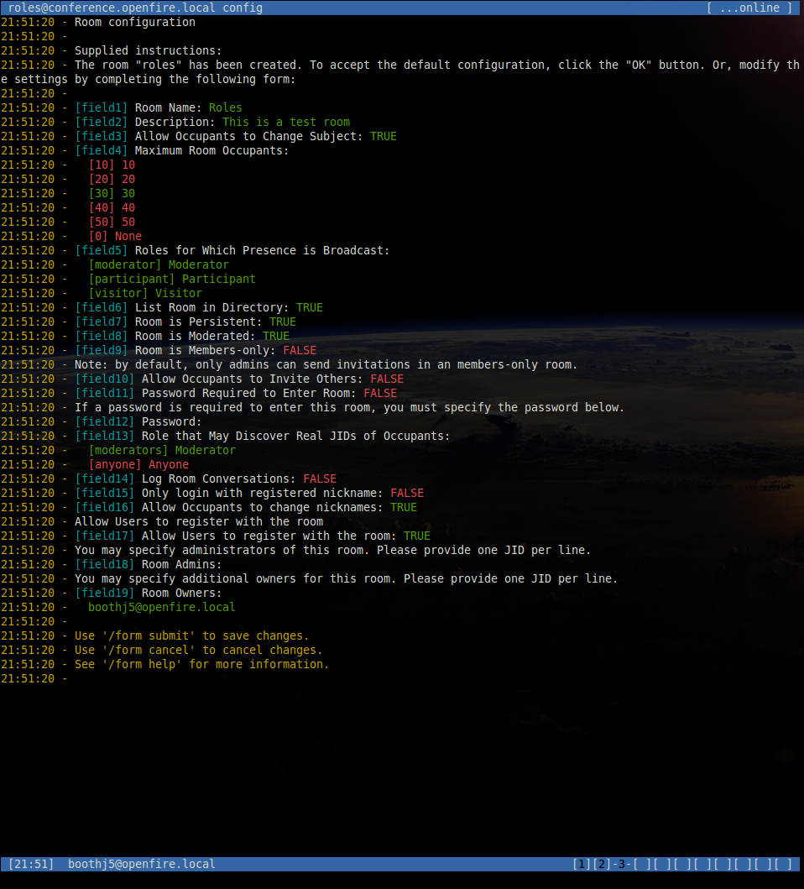

Contents
Creating a room
Chat rooms are created when you join a room that does not yet exist, using the /join command.
If the server only supports an older version of the groupchat protocol, no further action is required, and other users may join the room.
Servers supporting xep-0045 will create the room, which will be locked until the room has been configured, or the default configuration has been accepted.
To accept the default configuration and unlock the room:
/room acceptTo view and edit the room configuration (see the next section for details):
/room configTo cancel room creation and destroy the room:
/room destroyConfiguring a room
At any stage, users with appropiate privileges may configure a room with the following command:
/room configA new window will be opened, and the room configuration form displayed. Each field in the form is given a tag (e.g. "field2").
Form fields can be manipulated using the field tag and the value to set, add or remove depending on the field type. For example:
/field1 "New room name"
/field3 off
/field5 remove visitor
/field13 anyone
/field18 add anotheruser@openfire.localFor more information on how to manipulate a specific field, use the /form help command specifying the field tag, e.g.:
/form help field12At any time whilst the form is being edited, the latest values can be shown with:
/form showTo save the changes:
/form submitTo discard the changes:
/form cancelDestroying a room
If a user has appropriate privileges a room can be destroyed at any time using the following command:
/room destroyKicking occupants
Users with appropriate privileges may kick occupants from a room:
/kick novaAn optional reason may be supplied:
/kick nova Please do not use foul language.Banning users
Users with appropriate privileges may ban users permanently from a room, banning is carried out using the users Jabber ID rather than their nickname in the room:
/ban molly@chat.orgAn optional reason may be supplied:
/ban molly@chat.org You may not enter this room anymore.Managing occupant roles
Roles specify an occupant's privileges within a room for the duration of one particular visit to that room. The possible roles, and the privileges associated with them are defined in xep-0045.
Roles are set using an occupants room nickname, the user must have the appropriate privileges to run the following commands.
To show occupants of all roles:
/role listTo show occupants with a specific role:
/role list moderator
/role list participant
/role list visitorTo change an occupant's role, for example to set the occupant with nick bobmould to have role participant:
/role set participant bobmouldAn optional reason may be specified:
/role set participant bobmould You may now speak!Managing user affiliations
Affiliations specify an user's privileges for a room across visits to that room. The possible affiliations, and the privileges associated with them are defined in xep-0045.
Affiliations are set using a users JID, the user must have the appropriate privileges to run the following commands.
To show users of all affiliations:
/affiliation listTo show users with a specific affiliation:
/affiliation list owner
/affiliation list admin
/affiliation list member
/affiliation list outcastTo change an users's affiliation, for example to set the user with JID bob_mould@chat.org to have affiliation member:
/affiliation set member bob_mould@chat.orgAn optional reason may be specified:
/affiliation set member bob_mould@chat.org Because you come here so often.